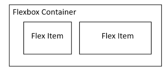

| font-size |
Define el tamaño de la fuente |
small, medium, large, px, em, rem |
font-size: 16px; |
|
MDN |
| border-radius |
Permite redondear las esquinas de un elemento |
px, %, em |
border-radius: 10px; |

|
MDN |
| display |
Define cómo se muestra un elemento en la página |
block, inline, flex, grid |
display: flex; |

|
MDN |
| flexbox (display: flex) |
Permite distribuir elementos de forma flexible dentro de un contenedor |
flex, inline-flex |
display: flex; |

|
MDN |
| position |
Define la posición de un elemento en la página |
static, relative, absolute, fixed, sticky |
position: absolute; |

|
MDN |
| box-shadow |
Agrega sombra a un elemento |
none, offset-x offset-y blur-radius color |
box-shadow: 5px 5px 10px gray; |

|
MDN |
| overflow |
Controla el contenido que se desborda de un contenedor |
visible, hidden, scroll, auto |
overflow: hidden; |

|
MDN |
| z-index |
Controla la superposición de elementos |
número entero |
z-index: 10; |

|
MDN |
| opacity |
Define la opacidad de un elemento |
0 (transparente) a 1 (opaco) |
opacity: 0.5; |
|
MDN |
| margin |
Define el espacio exterior de un elemento |
px, %, auto |
margin: 20px; |

|
MDN |
| padding |
Define el espacio interno de un elemento |
px, %, em |
padding: 15px; |
|
MDN |
| background-color |
Define el color de fondo de un elemento |
nombre de color, código hexadecimal, rgb, rgba |
background-color: #ff0000; |

|
MDN |
| text-align |
Define la alineación del texto dentro de un elemento |
left, right, center, justify |
text-align: center; |

|
MDN |
| cursor |
Define el tipo de cursor al pasar sobre un elemento |
pointer, default, move, text, wait |
cursor: pointer; |

|
MDN |
| visibility |
Controla la visibilidad de un elemento |
visible, hidden, collapse |
visibility: hidden; |
|
MDN |